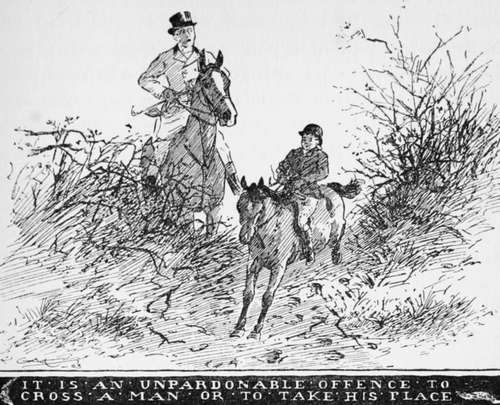

The Choice Of A Horse And Its Handling. Part 5
Description
This section is from the book "Horses, Guns, And Dogs", by J. Otho Paget, George A. B. Dewar A. B. Portman, And A. Innes Shand. Also available from Amazon: Horses, guns and dogs.
The Choice Of A Horse And Its Handling. Part 5
There are a great many methods of handling young horses, and several books have been written on the subject, but the most practical I have come across is one by Captain Hayes. This work I will recommend to you if it is your intention to tame the unbroken colt, but I have not space here to go fully into the matter.
When you have made your young horse thoroughly familiar with the things he must come in contact with, and he is quiet to ride, you will be anxious to give him his first lesson in jumping. In this proceeding you must expend as much time and patience as you gave to the preliminary handling. Whyte-Melville says : " Do not forget, however, that education should be gradual as moonrise, perceptible, not in progress, but result." In other words, you must not attempt to teach higher mathematics until your pupil has mastered simple arithmetic. Whyte-Melville's "Riding Recollections " is a book every young rider should thoroughly digest. It is not only pleasant reading, but is full of wisdom, and I know of nothing that has been written on the subject of horsemanship which can compare with it.
Some horses are natural jumpers, and require very little tuition, but very few jump in good form without being properly schooled. A man with good nerve will take a horse that has never been over a fence in its life, and ride it across country in the wake of hounds. He will probably get several falls, which I consider very often destroy the confidence of a bold young horse, but he will succeed in getting his mount either over or through the fences. This is a rough and ready method which I do not recommend. Of course our first object is to get after hounds, and it is better to walk through a hedge than to be left behind, but in my view half the pleasure in riding across country is to do it in the style that gives satisfaction both to yourself and your horse. Any one who is bold enough can get over the fence somehow, but it requires a good horseman to sail over the fence in that smooth and easy style which is the poetry of riding. You who are a beginner cannot hope to attain this perfection at the start, but do not be satisfied with slovenly methods, and strive by degrees to reach the higher standard.
The man with bad hands can never be in sympathy with his horse : hands and horse are for ever fighting against each other. Watch a really good horseman riding over a country and you will appreciate what I mean. Hounds are running, and our friend whom we have selected as an example has secured a good start. The horse has previously been the mount of a bad rider, and remembering the last occasion, dashes off at full speed, and with his head between his knees, endeavours to avoid the pain of an expected drag on the bars of his mouth. The snaffle worked to and fro quickly brings up his head into its natural place, and finding nothing hurts him in that position, is content to leave it there. The first fence now looms in sight, and the horse knows at once, by the mysterious feel of his rider's legs, which spot he will require to jump. When within some fifty yards of the fence, and mindful of previous occasions, he will increase his pace and lean heavily on the bit, but his onward career will suddenly be checked by the application of the curb, which hitherto had not troubled him. This will bring his head towards his chest, and as he bends to the signal, the curb will be relaxed and the snaffle will play lightly on the sensitive bars. His hind legs well under him, he now moves forward with a short and collected stride, but the firm grip on the saddle-flaps never for a moment allows him to doubt his rider's intention of jumping. A light touch with the bridle and a faint squeeze of the rider's legs then indicate that the exact moment for taking off" has arrived. Much to the horse's surprise, he finds that little effort is needed to clear the fence, and except for a fairy-like touch on the reins there is nothing to restrain him from stretching out his head as he lands on the other side. Thus from fence to fence horse and rider go on, gradually gaining confidence in one another, until at the end of the day the wild, rushing, headstrong brute has been converted into a temperate hunter.
Now let us go back to the preliminary lessons in jumping. A stiff wooden bar that will not break should be used, and the colt driven over it with long reins, but you will find full directions for this in Captain Hayes' book. The mistake that most people make is asking their horses to jump too high at the start. In the beginning the bar should be on the ground, and should be raised gradually a few inches at a time. For the first lesson three feet is quite high enough, and after that you can increase it slightly every day, but the most important part in putting a horse over a bar is to make him jump in good style from his hocks, and never faster than a canter. Where possible it is better to have the school enclosed.
After a course of lessons in the school, you can ride your pupil over a few fences, but here again let me advise you to select small places at the start. Your object must always be to give the horse confidence in himself, and never allow him to sicken of his task, so that jumping will be to him a pleasure and not an irksome duty.

Continue to:
- prev: The Choice Of A Horse And Its Handling. Part 4
- Table of Contents
- next: Chapter IV. Various Hints In Riding And Driving